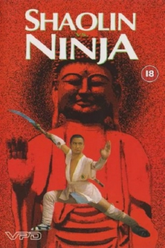

Also known as:Shao Lin yu ren zhe (original title)
Country:ZH, 84 minutes
Spoken languages:Mandarin
Genres:Action
Director(s):Robert Tai
Writer(s):Cheung Gin-Gat
Video Codec:Unknown
Number: 265


Certification:
Storyline:
A Japanese Prince proposes to the Shaolin abbot that a contest between Ching and Japanese martials arts should be held at the Shaolin Temple. However this is just a front for a more villainous plot to overthrow Shaolin and then China herself. Without doubt some of the best choreography to come out of the Orient and crack up as Japanese Bushido experts take on the very best of Shaolin kung fu
Cast:

Medium: Original DVD,
Comments: Part of: Shaolin vs. 4 film set
Loaned: No
Aspect ratio: Unknown